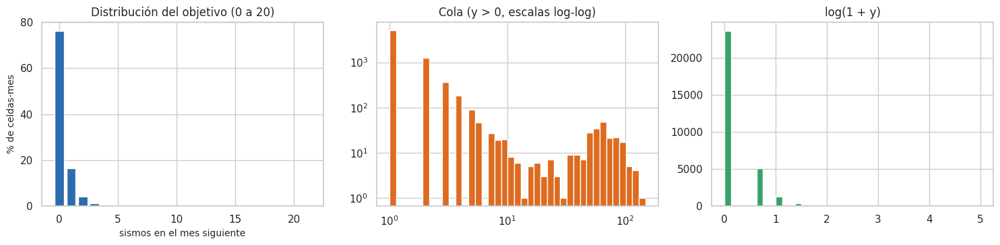
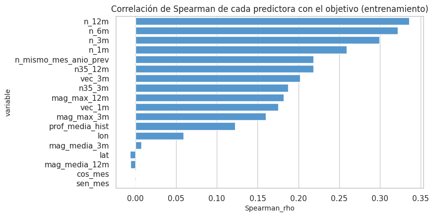
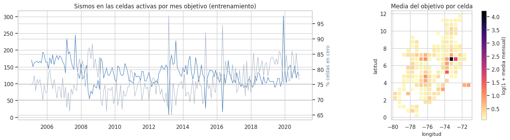

3. Análisis de la variable objetivo (2.1)#
Objetivo: número de sismos M ≥ 2,5 en la celda durante el mes siguiente.
Todo el capítulo usa solo el entrenamiento, es decir, los meses objetivo hasta noviembre de 2020. Las conclusiones de aquí deciden la métrica, la transformación del objetivo y la validación.
# Distribución del objetivo (sismos por celda-mes) en el entrenamiento: frecuencias y acumulado
ev_, X, info, tr, gp, te = datos.panel_completo()
P = datos.panel_dataframe(X, info, tr)
y = P["y"].to_numpy()
frec = (pd.Series(y).value_counts().sort_index().rename_axis("sismos_en_el_mes").to_frame("celdas_mes"))
frec["%"] = 100 * frec.celdas_mes / len(y)
frec["% acumulado"] = frec["%"].cumsum()
desc = pd.DataFrame({
"n": [len(y)], "media": [y.mean()], "varianza": [y.var()], "índice de dispersión (var/media)": [y.var() / y.mean()],
"mediana": [np.median(y)], "p90": [np.percentile(y, 90)], "p99": [np.percentile(y, 99)], "máx": [y.max()],
"% ceros": [100 * np.mean(y == 0)], "asimetría": [stats.skew(y)], "curtosis": [stats.kurtosis(y)],
"asimetría log1p": [stats.skew(np.log1p(y))],
})
eda.guardar_tabla(desc, "objetivo_resumen.csv")
eda.guardar_tabla(frec.reset_index(), "objetivo_frecuencias.csv")
display(desc.round(2))
frec.head(12).round(2)
| n | media | varianza | índice de dispersión (var/media) | mediana | p90 | p99 | máx | % ceros | asimetría | curtosis | asimetría log1p | |
|---|---|---|---|---|---|---|---|---|---|---|---|---|
| 0 | 30970 | 0.81 | 32.36 | 40.06 | 0.0 | 1.0 | 7.0 | 148.0 | 76.3 | 13.15 | 190.65 | 3.95 |
| celdas_mes | % | % acumulado | |
|---|---|---|---|
| sismos_en_el_mes | |||
| 0.0 | 23629 | 76.30 | 76.30 |
| 1.0 | 5086 | 16.42 | 92.72 |
| 2.0 | 1262 | 4.07 | 96.79 |
| 3.0 | 364 | 1.18 | 97.97 |
| 4.0 | 182 | 0.59 | 98.56 |
| 5.0 | 89 | 0.29 | 98.84 |
| 6.0 | 47 | 0.15 | 99.00 |
| 7.0 | 27 | 0.09 | 99.08 |
| 8.0 | 19 | 0.06 | 99.14 |
| 9.0 | 10 | 0.03 | 99.18 |
| 10.0 | 10 | 0.03 | 99.21 |
| 11.0 | 8 | 0.03 | 99.23 |
# Gráficos del objetivo: zona 0–20, cola en escala log-log y log(1 + y)
fig, axes = plt.subplots(1, 3, figsize=(15, 3.8))
axes[0].bar(frec.index[:21], frec["%"].iloc[:21], color="#2b6cb0")
axes[0].set_title("Distribución del objetivo (0 a 20)"); axes[0].set_xlabel("sismos en el mes siguiente"); axes[0].set_ylabel("% de celdas-mes")
axes[1].hist(y[y > 0], bins=np.logspace(0, np.log10(y.max() + 1), 40), color="#dd6b20")
axes[1].set_xscale("log"); axes[1].set_yscale("log"); axes[1].set_title("Cola (y > 0, escalas log-log)")
axes[2].hist(np.log1p(y), bins=40, color="#38a169"); axes[2].set_title("log(1 + y)")
plt.tight_layout(); eda.guardar_figura(fig, "03_distribucion_objetivo.png"); plt.show()

¿Poisson, binomial negativa o inflada en ceros?#
Se compara la proporción de ceros observada con la que predicen una Poisson y una binomial negativa de la misma media. Primero se hace globalmente y después dentro de cada celda, porque la mezcla de celdas activas e inactivas por sí sola ya produce sobredispersión.
# Exceso de ceros y sobredispersión: ceros observados frente a Poisson y binomial negativa, global y por celda
mu, v = y.mean(), y.var()
r_nb = mu ** 2 / max(v - mu, 1e-9)
global_ = {"observado": np.mean(y == 0), "Poisson": np.exp(-mu), "Binomial negativa": (r_nb / (r_nb + mu)) ** r_nb}
por_celda = P.groupby("celda").y.agg(["mean", "var", lambda s: np.mean(s == 0)]).rename(columns={"<lambda_0>": "ceros"})
por_celda["ceros_Poisson"] = np.exp(-por_celda["mean"])
por_celda["dispersion"] = por_celda["var"] / por_celda["mean"].replace(0, np.nan)
ceros = pd.DataFrame({"proporción de ceros": global_}).T
eda.guardar_tabla(por_celda.reset_index(), "objetivo_por_celda.csv")
display(ceros.round(3))
md(f"""**Interpretación.**
- **Global.** Una Poisson con la media del entrenamiento ({es(mu, 2)}) esperaría {es(global_['Poisson'], 1, pct=True)} de ceros; se observan
{es(global_['observado'], 1, pct=True)}. El índice de dispersión var/media = {es(v / mu, 1)} (1 en una Poisson) indica **sobredispersión
extrema**. Una binomial negativa con la misma media y varianza se pasa al otro extremo ({es(global_['Binomial negativa'], 1, pct=True)} de ceros):
**ninguna distribución única** describe bien la mezcla de celdas tan distintas.
- **Dentro de cada celda.** La sobredispersión es **moderada en la celda típica** (índice var/media mediano de
{es(por_celda.dispersion.median(), 1)}), pero fuerte en las celdas activas: en {es((por_celda.dispersion > 1.5).mean(), 0, pct=True)} de las celdas pasa de 1,5.
La mediana del exceso de ceros sobre una Poisson con la media de la propia celda es de solo {es((por_celda.ceros - por_celda.ceros_Poisson).median(), 1, pct=True)}.
Conclusión: la sobredispersión global se debe **sobre todo a la heterogeneidad entre celdas** y, en las celdas activas,
al agrupamiento temporal.
- **Por qué importa.** El modelo debe distinguir las celdas (heterogeneidad) y, en las activas, capturar que los sismos llegan
**en grupos** (réplicas, enjambres). Esto es coherente con los modelos de
autoexcitación tipo ETAS (Ogata, 1988), en los que un sismo aumenta la probabilidad de otros cercanos en tiempo y espacio.""")
| observado | Poisson | Binomial negativa | |
|---|---|---|---|
| proporción de ceros | 0.763 | 0.446 | 0.927 |
Interpretación.
Global. Una Poisson con la media del entrenamiento (0,81) esperaría 44,6 % de ceros; se observan 76,3 %. El índice de dispersión var/media = 40,1 (1 en una Poisson) indica sobredispersión extrema. Una binomial negativa con la misma media y varianza se pasa al otro extremo (92,7 % de ceros): ninguna distribución única describe bien la mezcla de celdas tan distintas.
Dentro de cada celda. La sobredispersión es moderada en la celda típica (índice var/media mediano de 1,2), pero fuerte en las celdas activas: en 28 % de las celdas pasa de 1,5. La mediana del exceso de ceros sobre una Poisson con la media de la propia celda es de solo 1,6 %. Conclusión: la sobredispersión global se debe sobre todo a la heterogeneidad entre celdas y, en las celdas activas, al agrupamiento temporal.
Por qué importa. El modelo debe distinguir las celdas (heterogeneidad) y, en las activas, capturar que los sismos llegan en grupos (réplicas, enjambres). Esto es coherente con los modelos de autoexcitación tipo ETAS (Ogata, 1988), en los que un sismo aumenta la probabilidad de otros cercanos en tiempo y espacio.
Valores extremos: los enjambres#
# Las 10 celdas-mes con más sismos y la magnitud máxima de ese mes
top = P.nlargest(10, "y")[["fecha_obj", "celda", "lat", "lon", "y", "n_1m", "n_12m"]]
mmax = ev_.groupby(["celda", "mes"]).mag.max()
top["mag_max_en_el_mes"] = [mmax.get((c, m), np.nan) for c, m in zip(top.celda, P.loc[top.index, "mes_obj"])]
top["fecha_obj"] = top.fecha_obj.dt.strftime("%Y-%m")
eda.guardar_tabla(top, "objetivo_extremos.csv")
top
| fecha_obj | celda | lat | lon | y | n_1m | n_12m | mag_max_en_el_mes | |
|---|---|---|---|---|---|---|---|---|
| 6258 | 2019-12 | 527 | 3.25 | -74.25 | 148.0 | 0.0 | 6.0 | 5.9 |
| 19013 | 2006-03 | 753 | 6.75 | -73.25 | 122.0 | 90.0 | 1213.0 | 4.9 |
| 19000 | 2005-02 | 753 | 6.75 | -73.25 | 116.0 | 112.0 | 1248.0 | 5.8 |
| 19009 | 2005-11 | 753 | 6.75 | -73.25 | 116.0 | 111.0 | 1235.0 | 4.9 |
| 19015 | 2006-05 | 753 | 6.75 | -73.25 | 116.0 | 98.0 | 1242.0 | 5.5 |
| 19008 | 2005-10 | 753 | 6.75 | -73.25 | 111.0 | 101.0 | 1247.0 | 4.8 |
| 19002 | 2005-04 | 753 | 6.75 | -73.25 | 105.0 | 86.0 | 1302.0 | 4.9 |
| 19004 | 2005-06 | 753 | 6.75 | -73.25 | 105.0 | 101.0 | 1293.0 | 4.4 |
| 19011 | 2006-01 | 753 | 6.75 | -73.25 | 103.0 | 100.0 | 1248.0 | 5.6 |
| 19186 | 2020-08 | 753 | 6.75 | -73.25 | 103.0 | 93.0 | 935.0 | 4.3 |
# Separa los extremos del nido de Bucaramanga de los demás para interpretarlos
nido = top[(top.lat == 6.75) & (top.lon == -73.25)]
otra = top.drop(nido.index)
md(f"""**Interpretación.** Las 10 celdas-mes con más sismos tienen entre {int(top.y.min())} y {int(top.y.max())} sismos. Son de dos tipos:
- **{len(nido)} están en el nido de Bucaramanga** (lat 6,75, lon -73,25). Ahí el mes anterior ya era muy activo (`n_1m` entre
{int(nido.n_1m.min())} y {int(nido.n_1m.max())}): son extremos **persistentes** y en buena parte predecibles con el pasado reciente.
- **{len(otra)} es una secuencia que empieza de golpe**: celda ({', '.join(f'{a}, {b}' for a, b in zip(otra.lat, otra.lon))}) en {', '.join(otra.fecha_obj)}, con
`n_1m` = {', '.join(str(int(v)) for v in otra.n_1m)} el mes anterior y un sismo de magnitud máxima {', '.join(es(v, 1) for v in otra.mag_max_en_el_mes)}
en el mes. Es la típica secuencia de réplicas tras un sismo fuerte: **no se puede anticipar con el pasado de la celda** y será
un error grande de cualquier modelo.
Ninguno es un error de registro. Se conservan y se tratan con la escala logarítmica, sin recortarlos.""")
Interpretación. Las 10 celdas-mes con más sismos tienen entre 103 y 148 sismos. Son de dos tipos:
9 están en el nido de Bucaramanga (lat 6,75, lon -73,25). Ahí el mes anterior ya era muy activo (
n_1mentre 86 y 112): son extremos persistentes y en buena parte predecibles con el pasado reciente.1 es una secuencia que empieza de golpe: celda (3.25, -74.25) en 2019-12, con
n_1m= 0 el mes anterior y un sismo de magnitud máxima 5,9 en el mes. Es la típica secuencia de réplicas tras un sismo fuerte: no se puede anticipar con el pasado de la celda y será un error grande de cualquier modelo.
Ninguno es un error de registro. Se conservan y se tratan con la escala logarítmica, sin recortarlos.
Relación con las predictoras principales (resumen; detalle en el capítulo 5)#
# Relación monótona (Spearman) de cada predictora con el objetivo
rel = []
for c in X.columns:
x = P[c].to_numpy()
ok = ~np.isnan(x)
rho, p = stats.spearmanr(x[ok], y[ok])
rel.append({"variable": c, "Spearman_rho": rho, "p": p})
rel = pd.DataFrame(rel)
rel["p_FDR"] = eda.fdr_bh(rel.p)
rel = rel.sort_values("Spearman_rho", key=np.abs, ascending=False)
eda.guardar_tabla(rel, "objetivo_spearman.csv")
fig, ax = plt.subplots(figsize=(8, 4.5))
sns.barplot(data=rel, y="variable", x="Spearman_rho", color="#4299e1", ax=ax)
ax.set_title("Correlación de Spearman de cada predictora con el objetivo (entrenamiento)")
eda.guardar_figura(fig, "03_spearman_objetivo.png"); plt.show()
md(f"""**Interpretación.** Las predictoras más asociadas al conteo del mes siguiente son los **conteos recientes de la propia celda**
({', '.join(rel.variable.head(4))}, ρ entre {es(rel.Spearman_rho.head(4).min(), 2)} y {es(rel.Spearman_rho.head(4).max(), 2)}). Las variables de
calendario (`sen_mes`, `cos_mes`) casi no se asocian (|ρ| < {es(rel.loc[rel.variable.isin(['sen_mes', 'cos_mes']), 'Spearman_rho'].abs().max() + 0.005, 2)}).
La sismicidad no tiene estacionalidad apreciable, algo que el capítulo 7 confirma formalmente.""")

Interpretación. Las predictoras más asociadas al conteo del mes siguiente son los conteos recientes de la propia celda
(n_12m, n_6m, n_3m, n_1m, ρ entre 0,26 y 0,34). Las variables de
calendario (sen_mes, cos_mes) casi no se asocian (|ρ| < 0,01).
La sismicidad no tiene estacionalidad apreciable, algo que el capítulo 7 confirma formalmente.
Comportamiento en el tiempo y en el espacio#
# Evolución mensual del total de sismos y de la proporción de ceros, y media por celda en el mapa
mensual = P.groupby("fecha_obj").y.agg(["sum", "mean", lambda s: np.mean(s == 0)]).rename(columns={"<lambda_0>": "ceros"})
celda = P.groupby(["celda", "lat", "lon"]).y.mean().reset_index()
fig, axes = plt.subplots(1, 2, figsize=(15, 4.2), gridspec_kw={"width_ratios": [1.6, 1]})
axes[0].plot(mensual.index, mensual["sum"], lw=0.8, color="#2b6cb0")
axes[0].set_title("Sismos en las celdas activas por mes objetivo (entrenamiento)")
ax2 = axes[0].twinx(); ax2.plot(mensual.index, mensual["ceros"] * 100, lw=0.8, color="#a0aec0"); ax2.set_ylabel("% celdas en cero", color="#718096")
sc = axes[1].scatter(celda.lon, celda.lat, c=np.log1p(celda.y), s=40, marker="s", cmap="magma_r")
plt.colorbar(sc, ax=axes[1], label="log(1 + media mensual)"); axes[1].set_title("Media del objetivo por celda")
axes[1].set_xlabel("longitud"); axes[1].set_ylabel("latitud"); axes[1].set_aspect("equal")
plt.tight_layout(); eda.guardar_figura(fig, "03_objetivo_tiempo_espacio.png"); plt.show()
md(f"""**Interpretación.**
- **En el tiempo.** El total mensual oscila alrededor de {es(mensual['sum'].median(), 0)} sismos (mediana), con picos aislados de
enjambres. El porcentaje de celdas en cero se mantiene estable (entre {es(mensual.ceros.quantile(0.05), 0, pct=True)} y
{es(mensual.ceros.quantile(0.95), 0, pct=True)} en el 90 % de los meses).
- **En el espacio.** La media por celda varía en **más de tres órdenes de magnitud**: de {es(celda.y.min(), 2)} a {es(celda.y.max(), 1)} sismos/mes.
Una sola celda (Bucaramanga) concentra buena parte del total. Esta heterogeneidad explica la sobredispersión global y exige
que el modelo use la **historia propia de cada celda**.""")

Interpretación.
En el tiempo. El total mensual oscila alrededor de 128 sismos (mediana), con picos aislados de enjambres. El porcentaje de celdas en cero se mantiene estable (entre 69 % y 85 % en el 90 % de los meses).
En el espacio. La media por celda varía en más de tres órdenes de magnitud: de 0,08 a 67,0 sismos/mes. Una sola celda (Bucaramanga) concentra buena parte del total. Esta heterogeneidad explica la sobredispersión global y exige que el modelo use la historia propia de cada celda.
Implicaciones para la métrica y la validación#
Transformación del objetivo.
Con 76 % de ceros y cola de ley de potencia, Box-Cox no es aplicable (requiere y > 0).
Se modela log(1 + y): reduce la asimetría de 13,2 a 3,9 (tabla de arriba) y convierte el error relativo en error absoluto. La asimetría restante se debe a la masa en cero, que ninguna transformación monótona elimina.
Los modelos se entrenan sobre log1p y se evalúan en la escala original con
expm1.
Métrica principal: RMSLE. Coincide con la pérdida en escala log y no se deja dominar por los enjambres, a diferencia del RMSE. El MAPE no se puede usar como métrica principal porque se indefine con ceros.
Validación.
La dependencia temporal (enjambres que duran varios meses) obliga a una partición cronológica con gap.
La heterogeneidad entre celdas obliga a reportar también un esquema por bloques espaciales, que mide cuánto empeora el modelo en zonas que no vio (capítulo 11).
La incertidumbre se estima remuestreando meses.
Modelos de conteo. La sobredispersión y el exceso de ceros dentro de cada celda justifican, en el Entregable 2, probar pérdidas de Poisson y modelos binomiales negativos inflados en ceros (ZINB).